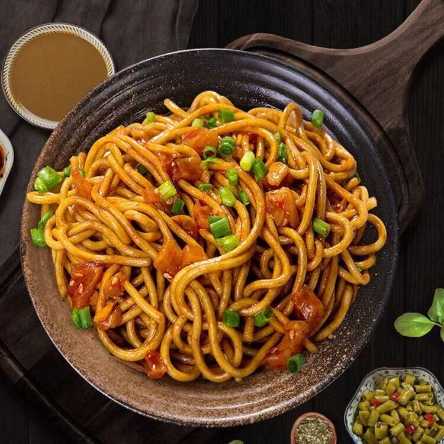
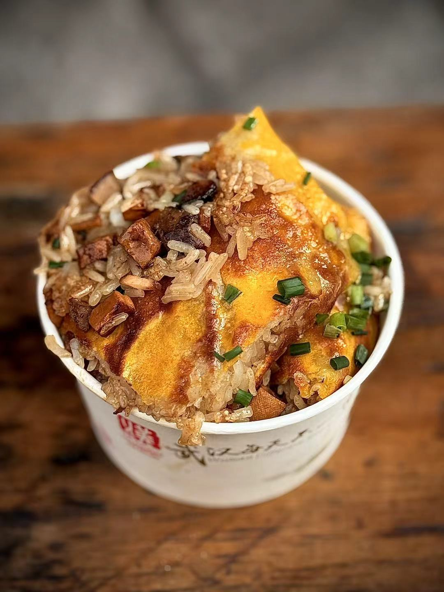
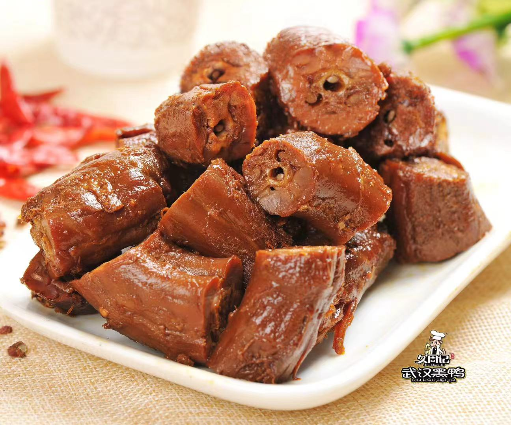
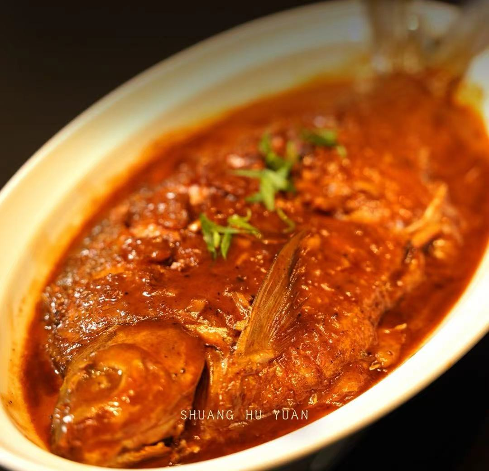
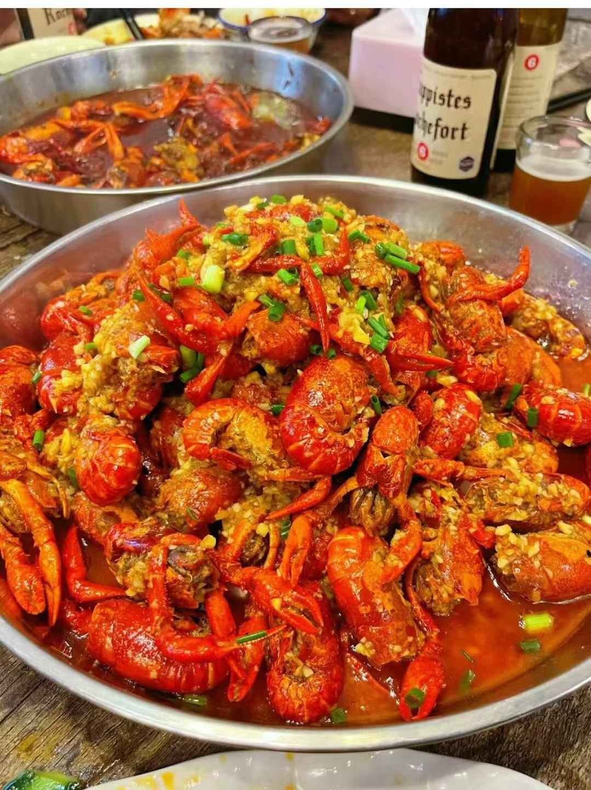

Hot Dry Noodles
The iconic breakfast of Wuhan, chewy noodles mixed with fragrant sesame paste, a daily staple for locals.
Explore the iconic flavors that define Wuhan's food culture

The iconic breakfast of Wuhan, chewy noodles mixed with fragrant sesame paste, a daily staple for locals.

A crispy golden beancurd sheet stuffed with glutinous rice, eggs, and fresh meat, a classic Wuhan morning snack.

Spicy and flavorful braised duck snacks, a nationally famous Wuhan specialty with a numbing, savory taste.

A legendary freshwater fish from the Yangtze River, steamed to perfection, praised in ancient Chinese poetry.

Wuhan's signature summer delicacy, spicy braised crayfish loved by locals and visitors alike.
Wuhan's food culture is a vibrant reflection of the city's spirit—bold, diverse, and deeply rooted in its riverside history. As a hub of central China, Wuhan blends flavors from Hubei's rural countryside with the hustle and bustle of urban street food, creating a culinary landscape that is both iconic and endlessly delicious.
From the morning streets filled with the aroma of hot dry noodles, to the lively night markets serving braised crayfish, every bite tells a story of Wuhan's warmth, vitality, and love for good food. It is a city where food is not just sustenance, but a way of life, bringing people together around the table.